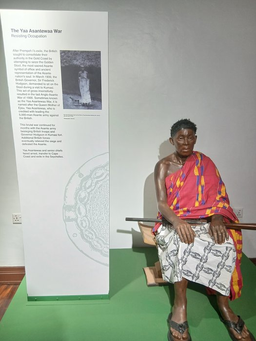

THE STOOL'S REFUSAL
No one will ever again be made to fight a war they did not choose — and she is the reason.

THE STOOL'S REFUSAL
No one will ever again be made to fight a war they did not choose — and she is the reason.
Feature map
Level-by-level features, as the figure refined them.
The Unconscripted
passive
Tier IV · Controller (Anti-Compulsion) · Suggested CE ability: CHA · Primary verb: Refuse. Technique DC = 8 + proficiency bonus + CHA modifier. The Host = willing creatures within her aura. Every protective feature below covers only willing creatures — the refusal must be chosen; this is the willing-decline valve, built into the foundation.
Willing creatures within 60 ft of Yaa are the Host. While in the aura, no Host member can be charmed or frightened, and Host members have advantage on saves against effects that would compel their actions or movement. No CE cost. The refusal is the technique's foundation — everything else is built on it. At any site of Ashanti significance — Kumasi, Ejisu, the Seychelles exile house — the Host aura extends to 120 ft, Not in My Name costs 1 CE, and Yaa has advantage on Charisma checks: the land testifies.
Plant the Banner
bonus action, 2 CE
Yaa plants her war banner at a point within 30 ft. The Host aura anchors to the banner (60-ft radius) for 1 hour or until she moves it as a bonus action. While she holds the banner herself, the radius is 90 ft. The line has a standard. Defend it accordingly.
Not in My Name
reaction, 3 CE
When a willing creature in the Host would be forced by a hostile effect to make an attack or move, Yaa interposes the council's verdict: the creature may choose to do nothing instead — the compulsion is refused; the effect's other consequences still apply. Once per round. The choice, preserved.
The Council's Shame
action, 4 CE
She speaks the charge. Each enemy within 60 ft that can hear her makes a WIS save vs her DC. On failure, until the end of her next turn it cannot use features that charm, frighten, or compel other creatures, and creatures it currently controls via technique or magic act independently (they will not attack except in self-defense). This suppresses command — it compels nothing.
The Stool Is Not for Taking
action, 5 CE, concentration, 1 minute
The Host aura extends to 120 ft. Hostile summoners and controllers in the aura must make a WIS save vs her DC at the start of each of their turns or lose control of their minions for that turn — the controlled act on instinct, take no orders, and will not attack except in self-defense. The cage stands open.
War of the Golden Stool
action, 6 CE, once per short rest
For 1 minute, whenever a hostile effect would charm, frighten, or compel a willing creature in the Host, the refusal holds: the effect fails outright against that creature — no save required — but each refusal costs Yaa 2 CE, paid when the effect lands (Heaven's refusal, exacted in cursed energy; if she cannot or will not pay, the effect resolves normally). Its originator takes psychic damage equal to her CHA modifier + PB as the council's verdict rebounds — once per round per originator.
The Queen-Mother's Levy
action, 8 CE, once per day
She calls the muster. Up to PB willing creatures within 120 ft join the Host for 1 hour, regardless of distance — they count as within the aura for all features. The unconscriptable army, assembled.
Maximum, Domain, or equivalent.
Capstone material.
Maximum: THE STOOL ITSELF (action, 10 CE, once per long rest)
For 1 minute, Yaa becomes the immovable center: she cannot be moved against her will and cannot be charmed, frightened, compelled, or possessed; the Host aura extends to 300 ft; any hostile creature entering the aura for the first time makes a WIS save vs her DC or has its command-type features suppressed while inside (repeating the save at the end of each of its turns).
Domain Expansion: THE WAR OF THE GOLDEN STOOL (full-turn action, 20 CE)
60-ft enclosed Domain. 800 clash points · 5-round burnout · 2-minute duration (per zack's Tier IV bookkeeping). - Sure-hit (allies): every willing creature in the Domain joins the Host — immune to charm, frighten, and compulsion while inside; when a hostile effect would compel them, it fails and the originator takes 4d8 psychic damage (WIS save vs her DC halves). - Sure-hit (enemies): every enemy in the Domain that controls, summons, or compels other creatures loses that control for the Domain's duration — minions stand down and will not attack except in self-defense; command-type technique features cost double CE while the Domain stands. When the Domain ends, suppressed control resumes for minions still present whose control effects have remaining duration; control effects that expired while suppressed do not resume. The muster, perfected: no one in the Domain fights a war they did not choose.
- Clash points
- 800
- Burnout
- 5 rounds
- Duration
- 2 minutes
- Radius
- 60-ft enclosed Domain
- Activation ✦
- full-turn action
- CE cost ✦
- 20
✦ Canon: figure Domains are Specific Domains — the stated profile governs, not the player point-unlock table.
THE UNCONSCRIPTABLE (passive)
While conscious, Yaa cannot be charmed, frightened, possessed, or compelled to act by any means — Heaven enforces her refusal, and there is no save because there is no effect to save against. Once per long rest, when an effect would force her to act against her will, she may reflect the council's verdict: the originator makes a WIS save vs her DC or is stunned until the end of its next turn — it hears the verdict, and cannot answer.
Build-defining options.
This technique grants Innate Technique Feats — hand-authored applications of the figure's art, available in the builder's feat picker when you select this technique.
Edge cases and shared systems.
Campaign canon notes